Depuis 1869, année de la toute première intégration scolaire d’une discipline sportive (la gymnastique, en l’espèce) comme matière d’éducation physique (soutenu par le ministre de l’époque, Victor Duruy), la place du sport dans nos vies et sociétés contemporaines aura considérablement évolué. D’abord cantonnée dans les établissements d’instruction publique de garçons, l’éducation physique et sportive intégra progressivement (sous l’impulsion de Jules Ferry) les programmes d’enseignement du primaire et secondaire à destination des garçons et des filles. Outre son utilité ‘directe’ relative à la préservation d’une bonne santé ainsi qu’à la réduction des risques de maladies notamment cardio-vasculaires, le sport et plus directement les exercices gymniques furent d’abord considérés comme un vecteur d’assouplissement non seulement musculaire mais aussi ‘moral’ et comportemental, pourrait-on dire — la pédagogie du sport reposant primitivement sur l’inculcation de certaines valeurs de la troisième République, à savoir l’ordre, la discipline, la rigueur, le patriotisme, également la force d’endurance (physique et mentale), le courage, la maîtrise.
Sans doute faudra-t-il attendre les années 1970, avec l’introduction des pédagogies actives, pour que le sport soit, d’une part, regardé comme un véritable vecteur de développement (tant social que cognitif et psychomoteur), d’épanouissement, et d’émancipation personnels et, d’autre part, qu’au seul critère jusqu’alors dominant de la performance s’ajoute (parfois se substitue) celui de la réussite (aussi bien personnelle que collective) conférant un supplément de vertus au cadre de la compétition. Aujourd’hui, le sport fait partie intégrante de nos vies quotidiennes. Il concourt au renforcement de l’estime de soi, rehausse le sens et le goût de l’effort. Il est, par ailleurs, un formidable vecteur du dialogue interculturel, de l’intégration sociale, en particulier celle des minorités ethniques et communautés issues de l’immigration — sorte de catalyseur du lien ‘humain’ encourageant à la diversité (sociale, culturelle), à la mixité, faisant de toutes les différences, une force, un atout, une chance. À l’échelle des grands évènements sportifs (soit les jeux olympiques ou encore les nombreux championnats du monde, toutes disciplines confondues), les attendus et objectifs ont aussi très largement changé au cours du temps. Le sociologue Max Horkheimer nous aura enseigné combien ils contribuent à la survie d’une concurrence loyale et pacifique entre les nations. Ils sont, en quelques sortes, à la ‘base’ de la formation d’un langage prétendant à l’universalité en ceci qu’il pourrait permettre d’établir des ponts entre les sociétés, les cultures et les religions.
Si la pratique du sport s’est aujourd’hui largement popularisée, on notera que le rapport performance-réussite aura toutefois occasionné un certain clivage (bipolarisation) entre les communautés de sportifs : d’un côté, se trouvent les professionnels, les semi-professionnels et ceux désireux de le devenir, d’un autre côté, se retrouvent les amateurs, pour certains assidus, réguliers pour d’autres plus occasionnels — s’y mêlent alors les passionnés, les curieux jusqu’aux velléitaires. Aussi, ces deux populations ne se mélangent guère ou que très rarement. La première (professionnelle) aura plus que tendance à négliger, à déconsidérer la seconde. Pourtant, toutes deux ont en commun un franc amour du sport ; ils reconnaissent, chacun à leur manière, tout le plaisir, le bien-être qu’ils trouvent en activité ainsi que le loisir, les émotions qu’ils retirent lorsque précisément le sport s’offre pour eux en spectacle. Tout professionnel, aussi talentueux et médaillé soit-il, aura été à ses débuts un amateur. Pour ce qu’il en est des sportifs amateurs, qu’ils entrevoient ou non de se professionnaliser, chacun aura un jour aspiré à filer les pas, à suivre les sillons de champions ‘modèles’, puisant en eux de l’allant, de l’élan. Aussi, les questions ici posées qu’il reviendra d’adresser dans le cadre du présent projet sont les suivantes : Comment œuvrer pour une démocratisation encore plus grande de la pratique sportive (tous publics) ? Comment soutenir, accompagner, aider durablement les amateurs dans leurs activités sportives quotidiennes (en particulier les plus paresseux ou apathiques) ? Comment faciliter, aider, encourager, inciter à la pratique en club ? Comment réunir ou à tout le moins rapprocher professionnels et amateurs, d’une façon non "artificielle" ? De quelle façon encourager, aider, accompagner les sportifs souhaitant emprunter la voie (semi-)professionnelle ?
Dans la perspective des Jeux Olympiques de Paris 2024 dont le succès reposera, pour une bonne part, sur l’intensité collective ainsi que sur la qualité des partages entre les publics et diverses communautés acteurs , il vous est proposé de participer à la conception d’un projet de design, intitulé « Urban Olympics », reposant sur l’emploi/le recours aux données publiques (data-driven design) pour la promotion et l’organisation/gestion/orchestration (…) du sport amateur en ville (au sein d’infrastructures adaptées, pérennes ou temporaires, également en ‘terrain urbain’) en marge ou parallèle (le Off-Olympics) de la tenue des Jeux Olympique à Paris (également dans la visée, dans la trajectoire d’ici à 2024) engageant d’autres relations d’échange/de partage entre acteurs (clubs ‘pros’ et amateurs, fédérations, associations, communautés ad-hoc, etc.). Deux axes de travail vous sont proposés :
1 — Service applicatif : réseautage social, ‘gamification’ et évènementiel JO
Définition et conception d’une (ou plusieurs) offre(s) servicielle(s) applicative(s) (application[s] logicielle[s] disponible[s] sur terminaux mobiles et résidents) joignant la mise en place d’un réseau social, la création d’un nouveau cadre de jeu et la conception d’un support éditorial/informationnel pour le suivi des JO 2024 (résultats et autres informations connexes). Celle-ci proposera différentes entrées fonctionnelles telles que : l’organisation d’entrainements, de tournois, de rencontres et compétitions amicales ‘off’, de challenges mixtes (professionnels, amateurs) ou dédiés ‘amateurs’ ; la synchronisation ou mutualisation d’activités sportives distantes (courses à pieds, de natation à différents endroits géographiques etc.) ; le coaching, l’accompagnement « ProToAm », etc.
2 — Représentation-visualisation de données
Définition et conception de représentation-visualisation de données (statiques, animées et/ou interactives) soit à part de l’offre applicative (ex : cartographie papier des « Sport Spots » à Paris ou sur le territoire français, etc.) ou bien s’y intégrant sous la forme de modules/widgets fonctionnels orientés ‘Pros’ et/ou ‘Ams’ (ex : suivi temps-réel des activités sportives dans la ville ; comparaison des performances des athlètes en compétition, panorama journalier des sports préférés des amateurs [en pratique comme dans les tribunes ou à l’écran] ; supervision des activités ou épreuves sportives ‘Pros’ et ‘Ams’ en cours par type, par âge, par niveau, par période, etc.).
Enquête sur les pratiques physiques et sportives en France
L'enquête 2010 sur la pratique physique et sportive en France, commanditée par le CNDS et le ministère en charge des sports, a été réalisée par la MEOS et l’INSEP qui en ont assuré la maîtrise d’œuvre.Elle vise à décrire la pratique physique et sportive au sens large, qu’elle soit autonome ou encadrée, intensive ou occasionnelle, à faire apparaître la plus grande diversité de pratiques physiques et sportives et à caractériser le profil socio-démographique des pratiquants et des non-pratiquants.
Recensement des licences et clubs auprès des fédérations sportives agréées par le ministère chargé des sports
Enquête exhaustive auprès de l’ensemble des fédérations françaises agréées délivrant des titres de participation, le recensement permet de mesurer le niveau et l’évolution dans le temps de la pratique sportive licenciée. Ces statistiques fournissent un éclairage pour les politiques publiques de développement du sport, tant au niveau national que territorial. Le recensement concernent l’ensemble des fédérations sportives agréées par le ministère chargé des sports. Les dernières données mises à disposition concernent l’année 2014 et couvrent la France Métropolitaine, la Guadeloupe, la Martinique, la Réunion, la Guyane, Mayotte, Saint-Pierre et Miquelon, Saint-Barthélemy, Saint-Martin, Wallis-et-Futuna, la Polynésie française et la Nouvelle-Calédonie. Le recensement concerne à la fois les licences proprement dites, mais aussi les autres types de participation (ATP). Une licence est définie comme un titre payant, permettant une pratique annuel, même si le possesseur de la licence ne pratique que deux mois dans l’année. Les ATP sont l’ensemble des titres qui ne sont pas des licences, comme par exemple, des titres à la journée.
Liste des sportifs de haut niveau
Pour favoriser les bons résultats des athlètes français dans les compétitions sportives internationales, le ministère chargé des sports développe une politique de suivi social afin que les sportifs de haut niveau puissent réaliser les performances à la hauteur de leur potentiel, tout en leur garantissant la poursuite d’une formation et d’une insertion professionnelle correspondant à leurs capacités et leurs aspirations. Le sport de haut niveau repose sur des critères bien établis qui sont : la reconnaissance du caractère de haut niveau des disciplines sportives ; les compétitions de référence ; la liste des sportifs de haut niveau ; les parcours de l’excellence sportive. Le ministre chargé des sports arrête, au vu des propositions des fédérations et après avis de la Commission nationale du sport de haut niveau, la liste des sportifs de haut niveau. Cette liste contient 6 catégories de sportifs: Senior, Elite, Espoir, Jeune, Partenaire d’entraînement et Reconversion.
La dépense sportive des ménages
La dépense sportive des ménages correspond principalement aux licences et autres cotisations versées par les adhérents aux clubs de sport et autres associations sportives, ainsi qu’aux droits d’accès payés par les utilisateurs des installations sportives privées ou publiques (piscines, stades, terrains de golf,...) et les spectateurs des manifestations sportives. Elle inclut aussi les autres achats de biens de consommation et de services payants dont l’usage est habituellement requis pour pouvoir exercer des activités sportives ou en améliorer leurs pratiques.
Le Répertoire National des Associations (RNA)
Le RNA est un fichier national développé par le ministère de l’Intérieur recensant l’ensemble des informations sur les associations. Chaque association est identifiée par un "numéro RNA" débutant par W et composé de 9 chiffres. Conformément à la Loi du 1er juillet 1901, toute création d’association fait l’objet d’une déclaration auprès du représentant de l’Etat dans le département. Elle est soumise à la publication des éléments suivants au Journal Officiel : nom et objet de l’association, statuts, adresse du siège social, des établissements éventuels, noms, professions, domiciles et nationalités des administrateurs. Le numéro RNA est attribué automatiquement à l'association lors de sa déclaration de création. Elle doit en outre demander son immatriculation au répertoire Sirene lorsqu'elle souhaite demander des subventions auprès de l’État ou des collectivités territoriales, lorsqu'elle emploie des salariés ou lorsqu'elle exerce des activités qui conduisent au paiement de la TVA ou de l'impôt sur les sociétés. La diffusion au Journal Officiel des Associations et Fondations d'Entreprise (JOAFE) est assurée par la DILA (Direction de l’information légale et administrative). La DILA publie par ailleurs un listing des déclarations extrait du JOAFE (fichier "Associations") sur le site data.gouv pour les années 2004 à 2014. Le domaine d'activité des associations est identifiée sous une variable "Thème" codé en 5 chiffres. Les associations intervenant dans le domaine du sport couvrent les grands thèmes "11000 - Sports, activités de plein air" (43 postes) et "13000-chasse et pêche" (2 postes) : 11030-Badminton, 11070-Handball, 11165-Tennis ....13005-chasse, 13010-pêche.
Observatoire de l’économie du sport
L’Observatoire de l’Économie du Sport a pour mission de fournir aux acteurs de l’Économie du Sport, une information régulière et fiable sur l’état et l’évolution des marchés du sport et leur rôle dans l’économie et la société. Il mobilise des données d'organismes partenaires et propose une série d'indicateurs clés valorisés sous la forme de fiches thématiques France entière : Macro-économie, Sportainment, Marché à l'export, évènements sportif ...
Recensement des équipements sportifs, espaces et sites de pratiques
Le ministère chargé des sports met en œuvre, depuis 2004, une démarche nationale de recensement des équipements sportifs, qui s'inscrit dans un cadre partenarial avec le mouvement sportif et les collectivités territoriales. La direction des sports en assure le pilotage national, tandis que les DRJSCS coordonnent sa mise en œuvre en lien avec les DDCS et DDCSPP selon des modalités définies entre elles. Le recensement des équipements sportifs, espaces et sites de pratiques (RES) concerne, avec l'objectif affiché d'exhaustivité, tous les équipements, en service, publics ou privés, ouverts au public à titre gratuit ou payant. Le critère essentiel est que toute personne puisse y accéder (à titre individuel ou via une structure publique ou privée [associative ou commerciale]), à titre gratuit ou payant, avec pour objectif principal d'y pratiquer une activité physique et/ou sportive. Le recensement fixe dans ce cadre 30 grandes familles d'équipements sportifs déclinées en 160 types.
Fichier des éducateurs sportifs de la base EAPS
Tout éducateur désirant enseigner, animer, encadrer ou entraîner, contre rémunération, à titre d’occupation principale ou secondaire, de façon habituelle, saisonnière ou occasionnelle, doit se déclarer auprès de la direction départementale de la cohésion sociale (ou direction départementale de la cohésion sociale et de la protection des populations) de son lieu d’exercice. La direction départementale de la cohésion sociale concernée délivre à l’éducateur sportif, une fois toutes les vérifications effectuées, une carte professionnelle. Les éducateurs sportifs stagiaires en formation ne se voient pas délivrer de cartes professionnelles tant qu'ils ne sont pas titulaires d'au moins une qualification. Les données relatives aux éducateurs sportifs demandeurs sont stockées en temps réel dans la base EAPS. Elles sont accessibles à tous, sans restriction d’accès. Les éducateurs territoriaux des activités physiques et sportives et les professeurs d'éducation physique et sportive (EPS) titulaires exclusivement des concours respectifs de la fonction publique n'ont pas d'obligation de détenir une carte professionnelle en cours dans le cadre de leur mission de fonctionnaire. Ils n'apparaissent donc pas dans la base de données, sauf s'ils ont une activité professionnelle d'éducateur sportif en plus de leur mission de fonctionnaire.
Base des Conseillers Techniques Sportifs (CTS)
Tout éducateur désirant enseigner, animer, encadrer ou entraîner, contre rémunération, à titre d’occupation principale ou secondaire, de façon habituelle, saisonnière ou occasionnelle, doit se déclarer auprès de la direction départementale de la cohésion sociale (ou direction départementale de la cohésion sociale et de la protection des populations) de son lieu d’exercice. La direction départementale de la cohésion sociale concernée délivre à l’éducateur sportif, une fois toutes les vérifications effectuées, une carte professionnelle. Les éducateurs sportifs stagiaires en formation ne se voient pas délivrer de cartes professionnelles tant qu'ils ne sont pas titulaires d'au moins une qualification. Les données relatives aux éducateurs sportifs demandeurs sont stockées en temps réel dans la base EAPS. Elles sont accessibles à tous, sans restriction d’accès. Les éducateurs territoriaux des activités physiques et sportives et les professeurs d'éducation physique et sportive (EPS) titulaires exclusivement des concours respectifs de la fonction publique n'ont pas d'obligation de détenir une carte professionnelle en cours dans le cadre de leur mission de fonctionnaire. Ils n'apparaissent donc pas dans la base de données, sauf s'ils ont une activité professionnelle d'éducateur sportif en plus de leur mission de fonctionnaire.
Fichier des diplômés des métiers du sport de la base Forôme
Le code du sport indique que « seuls peuvent, contre rémunération, enseigner, animer ou encadrer une activité physique ou sportive ou entraîner ses pratiquants, à titre d'occupation principale ou secondaire, de façon habituelle, saisonnière ou occasionnelle sous réserve des dispositions du quatrième alinéa du présent article et de l'article L. 212-2 du présent code, les titulaires d'un diplôme, titre à finalité professionnelle ou certificat de qualification — garantissant la compétence de son titulaire en matière de sécurité des pratiquants et des tiers dans l'activité considérée et enregistré au répertoire national des certifications professionnelles (RNCP) dans les conditions prévues au II de l'article L. 335-6 du code de l'éducation. ». Le ministère de la ville, de la jeunesse et des sports administre une base de données dressant la liste des diplômes délivrés.
Athlètes inscrits sur la liste des sportifs de haut niveau en 2015
Maintenir le rang de la France parmi les grandes nations sportives est un axe important de la politique sportive de l’Etat qui passe par l’obtention de bons résultats lors des rencontres sportives internationales. Pour favoriser les bons résultats des athlètes français dans les compétitions sportives internationales, le ministère chargé des sports développe une politique de suivi social afin que les sportifs de haut niveau puissent réaliser les performances à la hauteur de leur potentiel, tout en leur garantissant la poursuite d’une formation et d’une insertion professionnelle correspondant à leurs capacités et leurs aspirations. Le sport de haut niveau repose sur des critères bien établis qui sont : la reconnaissance du caractère de haut niveau des disciplines sportives ; les compétitions de référence ; la liste des sportifs de haut niveau ; les parcours de l’excellence sportive. Le ministre chargé des sports arrête, au vu des propositions des fédérations et après avis de la Commission nationale du sport de haut niveau, la liste des sportifs de haut niveau. Cette liste contient 6 catégories de sportifs: Senior ; Elite ; Espoir ; Jeune ; Partenaire d’entraînement ; Reconversion.
Paris 2024
Divers
Lancement : 18 et 20 septembre 2018
2 séances de travail hebdomadaire les mardi et jeudi
— des points d'étapes sont à fixer —
Rendu #1: restitution intermédiaire : courant décembre 2018 — date à fixer —
1 séance de travail hebdomadaire les mardi
Rendu #2: restitution finale : courant juin 2019 — date à fixer —
Le Data Challenge, organisé par l'Université Paris 1 Panthéon-Sorbonne (en particulier l'école des arts de la Sorbonne — responsable de l'opération : David Bihanic), est mené en partenariat avec le ministère des sports, de la jeunesse, de l'éducation populaire et de la vie associative ainsi que l'équipe de la mission Etalab laquelle est rattachée à la direction interministérielle du numérique et du système d'information et de communication de l'État (DINSIC). Chargée de la politique d'ouverture et de partage des données publiques du gouvernement français, Etalab développe et maintient le portail data.gouv.fr. Parmi les personnes directement impliquées, il revient de mentionner: